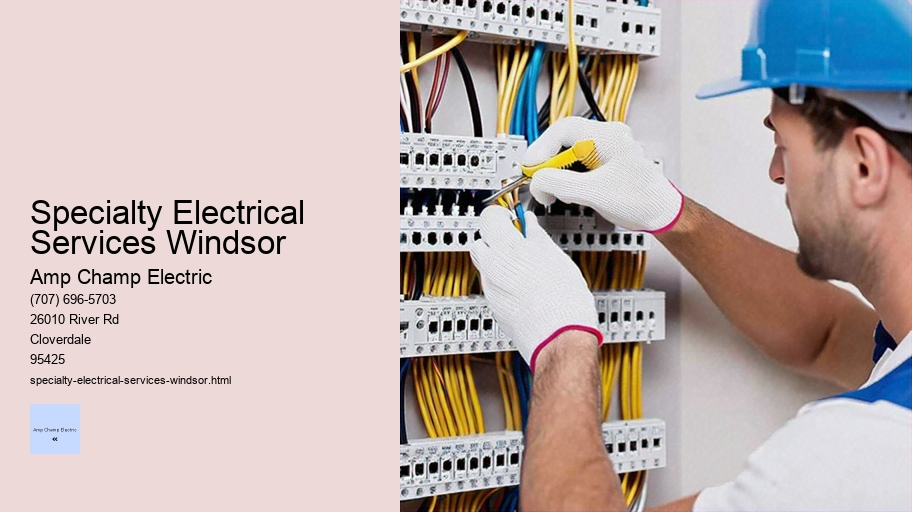

News
Electrical Installation Healdsburg
Electrical Installation Healdsburg
Electrical Installation Santa Rosa
Electrical Installation Cloverdale
Electrical Installation Geyserville
Electrical Installation Windsor
Maintenance and Repair Services Healdsburg
Maintenance and Repair Services Healdsburg
Maintenance and Repair Services Santa Rosa
Maintenance and Repair Services Cloverdale
Maintenance and Repair Services Geyserville
Maintenance and Repair Services Windsor
Electrical Safety Inspections Healdsburg
Electrical Safety Inspections Healdsburg
Electrical Safety Inspections Santa Rosa
Electrical Safety Inspections Cloverdale
Electrical Safety Inspections Geyserville
Electrical Safety Inspections Windsor
Energy Efficiency Upgrades Healdsburg
Energy Efficiency Upgrades Healdsburg
Energy Efficiency Upgrades Santa Rosa
Energy Efficiency Upgrades Cloverdale
Energy Efficiency Upgrades Geyserville
Energy Efficiency Upgrades Windsor
Specialty Electrical Services Healdsburg
Specialty Electrical Services Healdsburg
Specialty Electrical Services Santa Rosa
Specialty Electrical Services Cloverdale
Specialty Electrical Services Geyserville
Specialty Electrical Services Windsor
About Us
Contact Us

Specialty Electrical Services Windsor
Electrical Injuries
Specialty electrical services encompass a broad range of advanced and highly skilled tasks within the field of electrical engineering and installation. These services go beyond the routine wiring and fixture installations commonly associated with residential or commercial electricians. Specialty electrical services require a deeper level of expertise, precision, and often innovation to address complex, high-stakes projects that could involve industrial settings, medical facilities, renewable energy systems, smart home technology, and more.
One defining characteristic of specialty electrical services is their application in environments where the stakes are particularly high. For instance, hospitals and healthcare facilities rely on uninterrupted power for life-saving equipment; thus, they need specialized electrical systems designed for redundancy and reliability. Similarly, data centers — which store vast amounts of critical information — require meticulously planned and maintained power systems to prevent costly outages or data loss. In these cases, specialty electricians would design and implement solutions that can withstand emergencies or fluctuations without compromising performance.
Another area where specialty electrical services shine is in the realm of sustainable energy solutions. As our world gravitates toward green energy practices, the demand for experts capable of installing solar panels, wind turbines, battery storage systems, and integrating them into existing grids has surged. Such specialists not only understand the traditional aspects of power distribution but also how to harness natural resources effectively while ensuring that these new technologies work seamlessly with conventional systems.
Smart homes represent yet another frontier for specialty electrical services. With an ever-growing array of devices requiring internet connectivity — from thermostats to refrigerators — there’s a need for sophisticated wiring that supports both power delivery and data transmission within homes. Specialty electricians working in this niche must be familiar with IoT (Internet of Things) principles as well as networking technologies to create robust systems that enhance convenience without sacrificing security or functionality.
Industrial applications also call for specialty electrical services due to their unique challenges such as extreme temperatures, corrosive materials or explosive atmospheres — conditions found in oil refineries or chemical plants. Herein lies a significant responsibility: designing systems that not only meet rigorous safety standards but also maintain operational efficiency under demanding circumstances.
The educational pathway leading towards becoming a provider of specialty electrical services typically involves extensive training beyond basic licensure requirements. This might include higher education degrees in fields like electrical engineering or specialized certifications focusing on areas like low-voltage systems or programmable logic controllers (PLCs). Constant learning is central to success given the rapid evolution seen in technology related to electricity use and generation.
In addition to technical prowess, those offering specialty electrical services must excel at problem-solving since they frequently encounter situations requiring custom-tailored solutions rather than cookie-cutter approaches. They need an analytical mindset coupled with creativity because each project presents its own set of variables — whether adapting older buildings to new technologies or ensuring compliance with evolving industry regulations.
Lastly but certainly not least important are communication skills; these professionals must be able to translate complex concepts into understandable terms for clients who may not have a background in electronics or engineering while coordinating effectively with other tradespeople involved in larger construction projects.
In conclusion, specialist electricians play an essential role in keeping our modern world powered safely and efficiently across various industries by applying their deep knowledge base alongside innovative thinking. As society continues its relentless march forward technologically speaking so too will the demand for those adept at delivering cutting-edge specialty electrical services grow exponentially making it an exciting time indeed for players within this vital sector.
Voltage Testing
Electrical Installation Healdsburg
Title: The Art and Science of Data Cabling and Network Wiring
Electrical Injuries
In an age where the flow of information is as crucial as the blood coursing through our veins, data cabling and network wiring represent the circulatory system of our digital world. These essential components form the physical infrastructure upon which our communications, entertainment, security, and business operations depend. This essay delves into the intricate world of data cabling and network wiring, exploring their importance, complexities, methodologies, and impact on modern life.
Firstly, it's imperative to understand what we mean by data cabling and network wiring. Essentially, this refers to a broad range of cables used for different types of communication (such as data transmission) that connect various devices within a network – computers to routers, switches to servers, cameras to DVRs. The scope includes not only the wires themselves but also connectors, patch panels, wall plates, conduits, trunking systems and more.
The importance of high-quality data cabling cannot be overstated. In a commercial setting or even in sophisticated home networks; reliable connectivity determines whether business operations run smoothly or grind to a halt due to lost transactions or failed communications. For instance, imagine a financial institution whose trades rely on millisecond advantages; here proper cabling can make or break fortunes.
Another critical aspect is choosing the right type of cable for each application – from Ethernet cables like Cat5e for standard office networking up to Cat6a or fiber optic cables for high-speed data centers. Each has its own properties in terms of bandwidth capacity, resistance to electromagnetic interference (EMI), physical durability and ease (or difficulty) in installation.
Installation itself is both an art and science requiring skilled technicians who understand not just how to lay cables neatly but also how they interact with one another – avoiding cross-talk between lines which can degrade signal quality – how they should be secured against potential damage from environmental factors like moisture or heat; even how future expansion will be accommodated without starting again from scratch.
Network design plays a pivotal role before any cable is laid down. Planning ensures that not only does each point have connectivity but does so in an efficient manner reducing cable runs (and thus cost), minimizing potential points of failure by having redundant pathways where necessary.
Data cabling isn't something static; it's subject to industry standards such as those set forth by TIA/EIA ensuring interoperability between equipment made by different manufacturers while securing performance levels across installations worldwide thereby providing businesses with assurance regarding their investment into networking infrastructure.
As technology advances so too do these standards evolve reflecting new capabilities such as Power over Ethernet (PoE) where electricity runs alongside data allowing devices like VoIP phones or wireless access points draw power directly from their connection eliminating need separate power supplies further reducing clutter complexity within environments already dense technology.
Moreover today’s digital landscape demands attention towards cybersecurity at every level including physical layer i.e., your actual network wires. Secure racks lockable enclosures tamper-evident seals become part protection strategy protecting sensitive information unauthorized access even inside company premises because let's face it breaches aren’t always cyber nature sometimes they're very much analog involving someone simply plugging into wrong port if given chance.
Finally looking ahead we see trends emerging shaping future this domain notably advent smart buildings Internet Things (IoT) wherein every device lightbulb thermostat becomes node larger interconnected mesh necessitating yet more thoughtful approach laying out groundwork robust versatile enough accommodate ever-growing volume diverse types traffic passing through them all whilst maintaining speed reliability expected users accustomed instantaneous results touch button swipe screen.
In conclusion while may seem mundane mere afterthought compared glitzier aspects IT reality anything Without solid foundation provided proper planning implementation maintenance good quality data cabling networking wiring rest digital empire stands shaky ground rendering best software most powerful hardware effectively useless That why despite rapid pace change some things remain constant necessity getting basics right first time every time ensuring smooth uninterrupted dialogue endless streams ones zeros continue speak loudly clearly across globe connecting us ways could have hardly imagined mere decades ago testament human ingenuity quest stay connected no matter what lies ahead.
Specialty Electrical Services Windsor - Electrical Service Upgrades
Electrical Supply Stores
Motor Controls
Wire and Cable Management
Surge Protection
electrical-installation-healdsburg.html
electrical-installation-santa-rosa.html
electrical-installation-cloverdale.html
electrical-installation-geyserville.html
electrical-installation-windsor.html
maintenance-and-repair-services-healdsburg.html
maintenance-and-repair-services-santa-rosa.html
maintenance-and-repair-services-cloverdale.html
maintenance-and-repair-services-geyserville.html
maintenance-and-repair-services-windsor.html
electrical-safety-inspections-healdsburg.html
electrical-safety-inspections-santa-rosa.html
electrical-safety-inspections-cloverdale.html
electrical-safety-inspections-geyserville.html
electrical-safety-inspections-windsor.html
energy-efficiency-upgrades-healdsburg.html
energy-efficiency-upgrades-santa-rosa.html
energy-efficiency-upgrades-cloverdale.html
energy-efficiency-upgrades-geyserville.html
energy-efficiency-upgrades-windsor.html
specialty-electrical-services-healdsburg.html
specialty-electrical-services-santa-rosa.html
specialty-electrical-services-cloverdale.html
specialty-electrical-services-geyserville.html
specialty-electrical-services-windsor.html
privacy-policy.html
sitemap.html
sitemap.xml
about-us.html
feed.xml
Home theater audiovideo installations
Home Theater Audio-Video Installations: Crafting Cinematic Experiences at Home
From the thrilling crescendos of a symphonic score to the delicate whispers shared between on-screen lovers, our senses are constantly engaged and delighted by the magic of cinema. As movie enthusiasts seek to replicate this immersive experience within their homes, home theater audio-video installations have become not just a luxury but an essential component of contemporary living spaces designed for entertainment. This essay explores the intricacies involved in creating these personal cinematic sanctuaries.
The heart of any home theater is undoubtedly its audio-video system, which serves as the cornerstone that can either elevate or diminish one’s viewing experience. To achieve an optimal balance, meticulous planning and careful selection of components are necessary.
Specialty Electrical Services Windsor - Electrical Service Upgrades
Electrical Code Compliance
Electrical Supply Stores
Motor Controls
Wire and Cable Management
Surge Protection
Landscape Lighting
Cable Tray Installation
The process often starts with identifying the right room or space that will accommodate your home theater—a place where acoustics can be optimized and external light can be controlled.
Electrical Service Upgrades
Once an ideal location is chosen, attention turns to selecting a display device. In today's market, there are several options available including LED TVs, OLED displays, and projectors paired with screens.
Security System Wiring
Each offers different benefits; while televisions provide convenience and brightness suited for rooms with ambient light, projectors offer a larger image size that more closely mimics the feel of a commercial cinema.
Sound is perhaps even more critical than visual aspects when it comes to emulating a true cinematic environment. A quality surround sound system creates an auditory landscape that pulls viewers into the heart of the action—be it through subtle background noises or earth-shattering explosions. The 5.1-channel setup (five speakers plus one subwoofer) has been considered standard for years; however, advancements in technology have seen setups evolve up to 7.1-channels or more sophisticated Dolby Atmos configurations with ceiling-mounted speakers adding another dimension to sound delivery.
The caliber of each component—from AV receivers amplifying signals to high-fidelity speakers translating those signals into clear audio—is paramount. However, without proper installation and calibration tailored to both equipment capabilities and room acoustics, even top-of-the-line systems may fail to deliver their full potential.
Installation complexity increases with sophistication; running cables without compromising aesthetics requires planning and possibly construction work like drilling holes and routing wires behind walls for a clean look.
Electrical Relays
Speaker placement must adhere to specific angles relative to seating positions to ensure an enveloping sound field where dialogues are clear and special effects localized accurately around viewers.
Control systems also play a significant role in enhancing user experience by integrating various devices into one seamless interface—allowing users easy access whether they’re dimming lights or switching between streaming services.
Professional installation services often come into play here as they offer expertise in design considerations such as sightlines and seating arrangements ensuring unobstructed views from all angles while maintaining comfort during extended viewing periods.
Lastly comes personalization—the final touch that brings character and warmth to your home theater space might include custom seating with built-in vibration motors syncing motion effects with on-screen action or themed décor reflecting favorite film genres creating not just a room but an escape—a portal into worlds untold waiting beyond screen’s edge ready whisk you away at press button's command.
In conclusion, constructing a home theater is both art science intertwining cutting-edge technology thoughtful design create experiences once bound movie house now intimate part our domestic lives through meticulous audio-video installations we craft sensory journeys rival those silver screen turning homes havens storytelling spectacle wonder every time lights dim world fades replaced vast universe imagination unfolds before very eyes comfort own abode.
Security systems alarms and camera installation
Landscape lighting design and installation is an artful endeavor that transforms the nocturnal ambience of outdoor spaces, enhancing both their aesthetic appeal and functionality. By strategically placing light fixtures throughout a garden, yard, or any exterior area, one can accentuate architectural features, highlight landscaping elements, and ensure safety after sunset.
The process begins with a detailed design phase where imagination meets practicality.
Electrical Tools and Equipment
A designer must have a keen eye for detail and an understanding of how light interacts with different materials and surfaces. The primary objective is to create layers of illumination that serve various purposes – ambient lighting for overall visibility; task lighting for specific activities like cooking or reading; accent lighting to draw attention to particular features such as statues or trees; and security lighting to deter unwanted visitors.
Every landscape has its unique topography and characteristics that influence the design approach. Factors like existing vegetation, terrain elevation changes, water features, pathways, and the architectural style of the property all play crucial roles in determining the placement and intensity of light sources.
When designing landscape lighting, it's important to consider energy efficiency. LED technology has become increasingly popular due to its longevity and lower power consumption compared to traditional halogen or incandescent bulbs. Solar-powered lights offer another eco-friendly option by harnessing renewable energy from the sun.
A successful design must also take into account color temperature. Warmer white lights (measured in Kelvin) can create cozy environments suitable for entertainment areas while cooler whites may be preferable for highlighting greenery with a more natural appearance.
Once a plan is in place, installation commences with careful consideration of wiring routes and fixture placement to avoid disruption of plant roots or creating trip hazards with exposed cables. Professional installers will often use high-quality materials resistant to weathering and corrosion to ensure durability over time.
As part of the installation process, transformers are used to step down household voltage to a safer low-voltage current suitable for landscape lighting. This not only minimizes electrical hazards but also allows for more fixtures on a single line without overloading the system.
One should never overlook control systems during installation as they add convenience and flexibility. Timers can automate when lights turn on or off while dimmers allow control over intensity levels which can set different moods for various occasions. More advanced systems incorporate smart home technology enabling users to adjust settings remotely via smartphones or voice commands through virtual assistants like Amazon Alexa or Google Assistant.
Maintenance is an integral aspect post-installation since outdoor lights are subjected to harsher conditions than indoor ones. Regular cleaning of lenses ensures optimal brightness while checking connections helps prevent potential electrical issues before they arise.
In conclusion, landscape lighting design isn't merely about installing lamps around your backyard; it's about creating environments that extend usable living spaces into the night hours with purposeful beauty. Through meticulous planning combined with skilled execution—the dark canvas of night becomes illuminated with enchantment—offering safety security enhanced visual dynamics adding value enjoyment properties worldwide.
Landscape lighting design and installation
Title: The Essentials of Generator Installation and Maintenance
In the modern world where power outages can lead to significant inconveniences and even hazards, having a reliable source of backup power is crucial. Generators serve as an essential lifeline for homes, businesses, hospitals, and other critical facilities when the main electrical supply fails. However, the effectiveness of a generator not only depends on its quality but also on proper installation and diligent maintenance practices.
The journey of ensuring a working standby power system begins with professional generator installation.
Power Distribution Units (PDUs)
This process involves several key steps that must be meticulously followed to ensure safety and functionality. First among these steps is selecting the appropriate size and type of generator for your needs. Professionals often conduct load assessments to determine how much power is needed during an outage. Once this has been established, one can decide between various types including portable generators or permanent standby models.
Site preparation follows suit and cannot be understated in its importance. A suitable location is chosen based on factors such as proximity to fuel supply lines for gas-powered units, ventilation for exhaust fumes, protection from environmental elements, and compliance with local building codes which might dictate clearance around the unit. It's also vital to ensure that the generator is placed on a stable base to avoid vibrations that could cause wear over time.
Electrical connection comes next—a task that demands expert knowledge given its complexity and potential danger. A transfer switch is installed to safely connect the generator to the home's electrical panel; this device prevents back-feeding electricity into utility lines which can endanger workers repairing grid outages. All wiring should adhere strictly to national and local electrical codes.
Electrical Permit Assistance
Once installed, regular maintenance becomes key in guaranteeing reliability when you need your generator most. The cornerstone of good maintenance practice starts with reading and understanding the owner’s manual which details specific guidelines for each model. Common tasks include checking oil levels before use; performing oil changes after designated hours of operation; inspecting air filters; testing battery function; ensuring adequate fuel levels; running the generator periodically under load conditions (known as exercise cycles); monitoring control panels for error messages or service lights; replacing worn parts like spark plugs or belts as necessary.
It's crucial within maintenance regimes not just to react but also predict potential issues through scheduled servicing by qualified technicians who can provide deeper inspections into components like alternators or fuel injectors depending on whether your machine runs off diesel, petrol or natural gas.
Neglecting maintenance can lead both to failure when attempting startup during an emergency situation as well as reduced lifespan for your investment due largely in part because minor problems—if left unchecked—can evolve into costly repairs down the line.
Lastly, safety considerations are paramount throughout both installation and ongoing upkeep phases: from ensuring proper grounding during setup (to prevent electric shock) right up until storing fuels safely away from ignition sources if required.
In conclusion, thoughtful planning around generator installation coupled with consistent preventative care forms a robust strategy against unexpected blackouts - securing peace of mind that when external power systems falter your backup will perform seamlessly offering uninterrupted continuity whether at home or within business operations.
About
Windsor
may refer to:
About Windsor
Check our other pages :
Energy Efficiency Upgrades Geyserville
Maintenance and Repair Services Geyserville
Energy Efficiency Upgrades Santa Rosa
Frequently Asked Questions
What specific types of specialty electrical services are available in Windsor?
Specialty electrical services in Windsor typically include custom lighting installations, home automation system integration, energy-efficient upgrades, generator installation and maintenance, electrical panel upgrades, EV charger installation, and specialized commercial services such as high-voltage installations or data center wiring.
Are electricians in Windsor certified to perform both residential and commercial specialty electrical tasks?
Yes, most professional electricians in Windsor are licensed and certified to carry out a wide range of electrical work for both residential and commercial properties. It is important to ensure that the electrician you hire has the appropriate qualifications and experience for the specific service you require.
How can I verify that an electrician in Windsor is qualified and reliable for providing specialty electrical services?
To verify an electricians qualifications in Windsor, you should check if they are licensed by the Electrical Safety Authority (ESA) of Ontario. Additionally, look for reviews or testimonials from previous clients, ask for references, inquire about their years of experience with specialty services you need, ensure they have proper insurance coverage, and see if they offer any guarantees on their workmanship.
Specialty Electrical Services Windsor